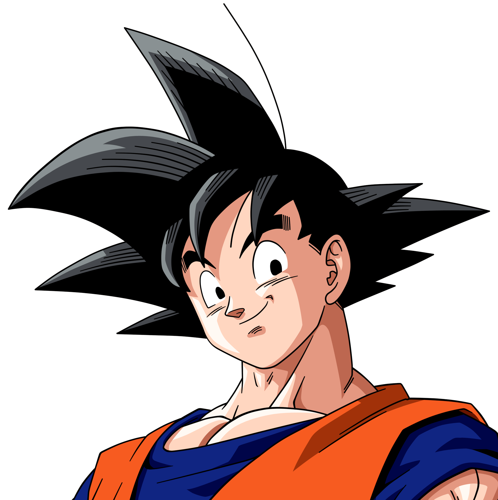

1. Formatos de Notación de Color en CSS Modelos de Color
CSS permite declarar colores a través de múltiples esquemas según la necesidad de precisión o transparencia:
#0d477a o con canal alfa #0d477acc. Formato estándar más utilizado por diseñadores y herramientas de UI como Figma.
rgba(13, 71, 122, 0.8). Canales Rojo, Verde y Azul de 0 a 255, más el canal Alfa de 0 a 1 que controla la opacidad del fondo.
hsl(208, 81%, 26%). Tono (*Hue* en grados de 0 a 360), Saturación (%) y Luminosidad (%). Ideal para generar paletas coherentes y variantes claras/oscuras.
2. Explorador Interactivo de Imágenes de Fondo Laboratorio en Vivo
background-size (cover, contain, auto), background-repeat y background-position. Observa en vivo cómo se escala, recorta o repite la imagen y lee la explicación técnica detallada debajo del lienzo.
🥋 Caso de Estudio: El Velo Semitransparente del CV de Son Goku
En el ejercicio práctico, para que el texto sea perfectamente legible sobre una foto de montañas, se utiliza una doble capa de fondo: un linear-gradient blanco al 65% superpuesto a la imagen:
/* Sintaxis de capas múltiples en background-image */ .banner-presentacion { background-image: linear-gradient(rgba(255, 255, 255, 0.65), rgba(255, 255, 255, 0.65)), /* Capa 1: Velo */ url('../images/mountain.png'); /* Capa 2: Foto */ background-size: cover; background-position: right top; }
3. Estudio Interactivo de Gradientes (Linear y Radial) Generador en Vivo
4. La Diferencia Crítica: `opacity` vs Canal Alfa (`rgba`) Trampa Típica de Examen
•
opacity: 0.5 vuelve semitransparente al elemento Y A TODOS SUS HIJOS (el texto también se vuelve transparente e ilegible).
•
background-color: rgba(...) SOLO hace transparente el fondo. El texto interior permanece 100% nítido, opaco y accesible.
Caja con `opacity: 0.5`
❌ ¡Atención! El texto interior se vuelve semitransparente e ilegible porque opacity afecta a toda la caja y sus descendientes.
Caja con `rgba(13, 71, 122, 0.5)`
✅ ¡Excelente! Solo el fondo es transparente. Las letras permanecen 100% blancas, nítidas y perfectamente legibles.
/* Comparación en código */ .tarjeta-mala { opacity: 0.5; /* ¡Afecta a la tarjeta, texto, iconos y botones hijos! */ } .tarjeta-buena { background-color: rgba(13, 71, 122, 0.5); /* Solo el fondo es transparente; texto nítido */ }
5. Laboratorio de Sombras (box-shadow) y Filtros Visuales (filter) Efectos Visuales Avanzados
CSS permite crear efectos de profundidad y postprocesado gráfico de nivel profesional. Es crucial entender la diferencia fundamental entre sombrear la caja rectangular de un elemento y proyectar sombras orgánicas sobre imágenes transparentes:
• `box-shadow: [inset] X Y blur spread color;` Proyecta una sombra en base a los límites rectangulares del elemento (su bounding box). Si se aplica a un PNG transparente, generará un marco cuadrado rígido alrededor.
• `filter: drop-shadow(X Y blur color);` Interpreta el canal alfa (transparencia) del contenido. La sombra se amolda a la silueta física del PNG o SVG.
• Filtros adicionales:
blur() (desenfoque gaussiano), hue-rotate() (rotación del círculo cromático de color) y brightness() (intensidad de brillo luminoso).
🎛️ Controles de `box-shadow` (Caja Rectangular):
✨ Controles de `filter` (Silueta y Efectos):
Tarjeta UI
Sombra de caja con `box-shadow`

Silueta PNG con `filter: drop-shadow()` y efectos